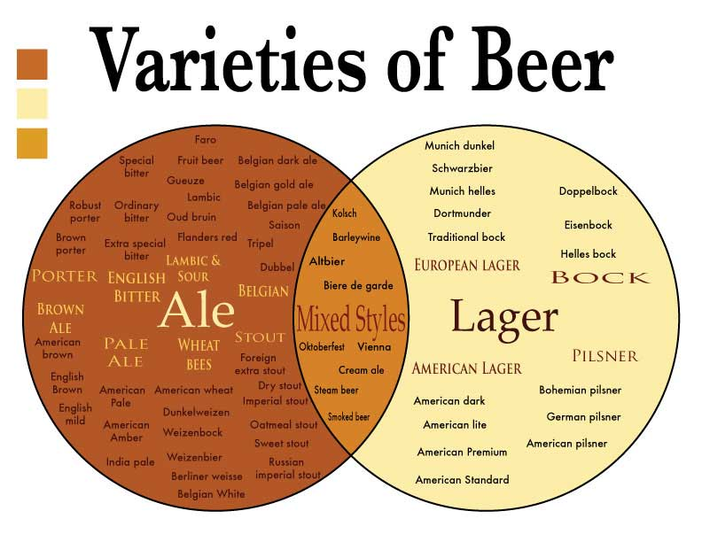

Styles of Beer
What's a beer style? Simply put, a beer style is a label given to a beer that describes its overall character and often times its origin. It's a name badge that has been achieved over many centuries of brewing, trial and error, marketing, and consumer acceptance. There are two major categories, ales and lagers.
What's an Ale?
This category of beer uses yeast that ferments at the top of the fermentation vessel, and typically at higher temperatures than lager yeast (60°-75°F), which, as a result, makes for a quicker fermentation period (7-8 days, or even less). Ale yeast are known to produce by-products called esters, which are flowery and fruity, with aromas ranging, but not limited to apple, pear, pineapple, grass, hay, plum, and prune.
What's a Lager? The word lager comes from the German word lagern which means, to store. A perfect description, as lagers are brewed with bottom fermenting yeast that work slowly at around 34 degrees F, and are often further stored at cool temperature to mature. Lager yeast produce fewer by-product characters than ale yeast which allows for other flavors to pull through, such as hops.
